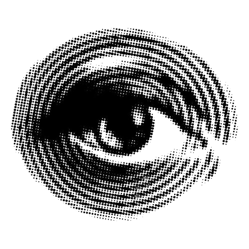

While his practice connects to the history of "net art," van den Dorpel also pushes beyond it, creating software that reflects his unique take on artificial intelligence. Blending technical skill with intuition, he builds systems that seem to think on their own - producing surprising, dreamlike visuals that feel both human and computational at once. Essentially, his practice focuses on systems that are ever changing and developing in the context of technology.